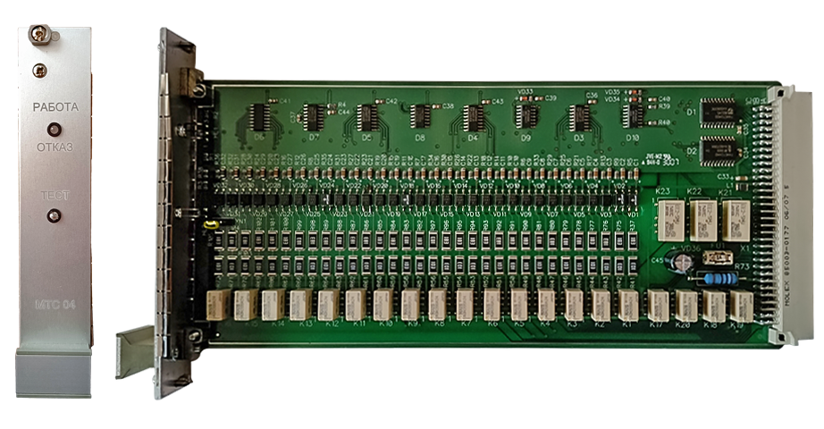

Замена МТС

На нормальную работу МТС указывает непрерывно мигающий синим цветом светодиод. Если светодиод стал красным, то это говорит о неисправности модуля, т.е. нарушена работоспособность линейного пункта (если модуль относится к «Основному» блоку).
Требуется заменить неработоспособный модуль ТС на рабочий модуль из ЗИПа.
Для этого необходимо:
- Открутить винты, фиксирующие модуль на БТ.
- Извлечь модуль ТС из БТ.
- На это место вставить исправный модуль ТС (перемычка на новом модуле должна стоять в таком же положении, как и на извлечённом неисправном модуле).
- Закрутить винты, фиксирующие модуль ТС в БТ.
- Запустить тест ТС по клавише «Shift+6».
- Если после завершения теста, светодиод продолжает мигать синим цветом, то значит модуль ТС находится в рабочем состоянии - работоспособность линейного пункта восстановлена.